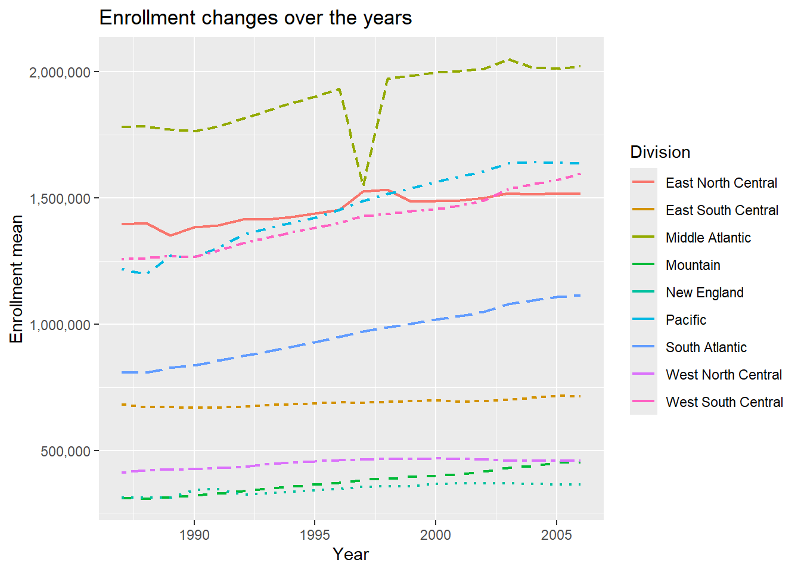

ST558 - Project 1: Data combination and summarization through functions
This is a collaborative project to showcase generic function writing for the purpose of automating data processing and manipulation. In addition, generic plotting functions help to automatically plot the returned data.
Author
Laraib Azmat & Sam O’Ferrell
Published
June 6, 2024
Library read in
library(tidyverse)
Warning: package 'tidyverse' was built under R version 4.3.3
Warning: package 'readr' was built under R version 4.3.3
Warning: package 'lubridate' was built under R version 4.3.3
── Attaching core tidyverse packages ──────────────────────── tidyverse 2.0.0 ──
✔ dplyr 1.1.4 ✔ readr 2.1.5
✔ forcats 1.0.0 ✔ stringr 1.5.1
✔ ggplot2 3.4.4 ✔ tibble 3.2.1
✔ lubridate 1.9.3 ✔ tidyr 1.3.0
✔ purrr 1.0.2
── Conflicts ────────────────────────────────────────── tidyverse_conflicts() ──
✖ dplyr::filter() masks stats::filter()
✖ dplyr::lag() masks stats::lag()
ℹ Use the conflicted package (<http://conflicted.r-lib.org/>) to force all conflicts to become errors
library(readr)library(readxl)
Warning: package 'readxl' was built under R version 4.3.3
library(scales)
Attaching package: 'scales'
The following object is masked from 'package:purrr':
discard
The following object is masked from 'package:readr':
col_factor
Data processing
First we will start our data manipulation and cleaning, without the use of creating functions.
Step 1: Read in the data
#reading in data from data folderedu_data <-read_csv("https://www4.stat.ncsu.edu/~online/datasets/EDU01a.csv")
Rows: 3198 Columns: 42
── Column specification ────────────────────────────────────────────────────────
Delimiter: ","
chr (22): Area_name, STCOU, EDU010187N1, EDU010187N2, EDU010188N1, EDU010188...
dbl (20): EDU010187F, EDU010187D, EDU010188F, EDU010188D, EDU010189F, EDU010...
ℹ Use `spec()` to retrieve the full column specification for this data.
ℹ Specify the column types or set `show_col_types = FALSE` to quiet this message.
#reading specs of table to get column namesspec(edu_data)
Step 2: Select only the Area_name (rename as area_name), STCOU and any columns that ends in “D”
#saving edits as a new objectedu_edit <- edu_data |>#selecting only area_name, STCOU, and the columns that end with "D"select(Area_name, STCOU, ends_with("D")) |>rename("area_name"="Area_name")
Step 3: Converting to a long form
#converting to a long form and moving the results to an "enrollment" columnedu_edit <- edu_edit |>pivot_longer(cols =3:12, values_to ="enrollment")#printing to see the resultsedu_edit
# A tibble: 31,980 × 4
area_name STCOU name enrollment
<chr> <chr> <chr> <dbl>
1 UNITED STATES 00000 EDU010187D 40024299
2 UNITED STATES 00000 EDU010188D 39967624
3 UNITED STATES 00000 EDU010189D 40317775
4 UNITED STATES 00000 EDU010190D 40737600
5 UNITED STATES 00000 EDU010191D 41385442
6 UNITED STATES 00000 EDU010192D 42088151
7 UNITED STATES 00000 EDU010193D 42724710
8 UNITED STATES 00000 EDU010194D 43369917
9 UNITED STATES 00000 EDU010195D 43993459
10 UNITED STATES 00000 EDU010196D 44715737
# ℹ 31,970 more rows
Step 4: Converting year to numeric data and adding a column to represent measurement
Because there are only 10 unique values of name, we can specify the year for each one within mutate.
#overwriting the object to save editsedu_edit <- edu_edit |>#changing the values to reflect years using the data information sheetmutate(year =case_when( name =="EDU010187D"~1987, name =="EDU010188D"~1988, name =="EDU010189D"~1989, name =="EDU010190D"~1990, name =="EDU010191D"~1991, name =="EDU010192D"~1992, name =="EDU010193D"~1993, name =="EDU010194D"~1994, name =="EDU010195D"~1995, name =="EDU010196D"~1996 ) ) |>#creating a new column to represent which measurement grabbedmutate(measurement =substr(edu_edit$name, 1, 7))#printing to see the resultsedu_edit
# A tibble: 31,980 × 6
area_name STCOU name enrollment year measurement
<chr> <chr> <chr> <dbl> <dbl> <chr>
1 UNITED STATES 00000 EDU010187D 40024299 1987 EDU0101
2 UNITED STATES 00000 EDU010188D 39967624 1988 EDU0101
3 UNITED STATES 00000 EDU010189D 40317775 1989 EDU0101
4 UNITED STATES 00000 EDU010190D 40737600 1990 EDU0101
5 UNITED STATES 00000 EDU010191D 41385442 1991 EDU0101
6 UNITED STATES 00000 EDU010192D 42088151 1992 EDU0101
7 UNITED STATES 00000 EDU010193D 42724710 1993 EDU0101
8 UNITED STATES 00000 EDU010194D 43369917 1994 EDU0101
9 UNITED STATES 00000 EDU010195D 43993459 1995 EDU0101
10 UNITED STATES 00000 EDU010196D 44715737 1996 EDU0101
# ℹ 31,970 more rows
Step 5: Creating a county data set with state variable
Here we will subset the data set to only include rows where the area name is in the form of a county. After subsetting, we will substring the area name variable to extract the state variable.
#creating new data set with county level dataedu_county <-subset(edu_edit, grepl(pattern =", \\w\\w", edu_edit$area_name))#overwriting the county object to save editsedu_county <- edu_county |>#adding a new column to represent county's statemutate(state =substr(area_name, nchar(area_name) -1, nchar(area_name))) |>#adjusting columns to look betterselect(area_name, state, STCOU, name, measurement, year, everything())#changing the class of the county data setclass(edu_county) <-c("county", class(edu_county))#printing the data setedu_county
# A tibble: 31,450 × 7
area_name state STCOU name measurement year enrollment
<chr> <chr> <chr> <chr> <chr> <dbl> <dbl>
1 Autauga, AL AL 01001 EDU010187D EDU0101 1987 6829
2 Autauga, AL AL 01001 EDU010188D EDU0101 1988 6900
3 Autauga, AL AL 01001 EDU010189D EDU0101 1989 6920
4 Autauga, AL AL 01001 EDU010190D EDU0101 1990 6847
5 Autauga, AL AL 01001 EDU010191D EDU0101 1991 7008
6 Autauga, AL AL 01001 EDU010192D EDU0101 1992 7137
7 Autauga, AL AL 01001 EDU010193D EDU0101 1993 7152
8 Autauga, AL AL 01001 EDU010194D EDU0101 1994 7381
9 Autauga, AL AL 01001 EDU010195D EDU0101 1995 7568
10 Autauga, AL AL 01001 EDU010196D EDU0101 1996 7834
# ℹ 31,440 more rows
Step 6: Creating a state data set with division variable
For the rest of the data set, we will create a state data set and specify the division of each state .
#creating new data set with state level dataedu_state <-subset(edu_edit, !(grepl(pattern =", \\w\\w", edu_edit$area_name)))#adding new column to reflect division of the stateedu_state$division <-as.character(setNames(state.division, state.name)[edu_state$area_name])#overwriting the state object to save editsedu_state <- edu_state |>#removing duplicate district of columbia rows by remove the all caps versionfilter(area_name !="DISTRICT OF COLUMBIA") |>#fixing division data to reflect error condition andmutate(division =case_when(str_to_title(area_name) %in%c("Connecticut","Maine","Massachusetts","New Hampshire","Rhode Island","Vermont" )~"New England",str_to_title(area_name) %in%c("New Jersey", "New York", "Pennsylvania")~"Middle Atlantic",str_to_title(area_name) %in%c("Illinois", "Indiana", "Michigan", "Ohio", "Wisconsin")~"East North Central",str_to_title(area_name) %in%c("Iowa","Kansas","Minnesota","Missouri","Nebraska","North Dakota","South Dakota" )~"West North Central",str_to_title(area_name) %in%c("Delaware","Florida","Georgia","Maryland","North Carolina","South Carolina","Virginia","District of Columbia","West Virginia" )~"South Atlantic",str_to_title(area_name) %in%c("Alabama", "Kentucky", "Mississippi", "Tennessee")~"East South Central",str_to_title(area_name) %in%c("Arkansas", "Louisiana", "Oklahoma", "Texas")~"West South Central",str_to_title(area_name) %in%c("Arizona","Colorado","Idaho","Montana","Nevada","New Mexico","Utah","Wyoming" )~"Mountain",str_to_title(area_name) %in%c("Alaska", "California", "Hawaii", "Oregon", "Washington")~"Pacific",is.na(division) ~"ERROR" ) ) |>#adjusting columns to look betterselect(area_name, division, STCOU, everything())#printing the data setedu_state
# A tibble: 520 × 7
area_name division STCOU name enrollment year measurement
<chr> <chr> <chr> <chr> <dbl> <dbl> <chr>
1 UNITED STATES ERROR 00000 EDU010187D 40024299 1987 EDU0101
2 UNITED STATES ERROR 00000 EDU010188D 39967624 1988 EDU0101
3 UNITED STATES ERROR 00000 EDU010189D 40317775 1989 EDU0101
4 UNITED STATES ERROR 00000 EDU010190D 40737600 1990 EDU0101
5 UNITED STATES ERROR 00000 EDU010191D 41385442 1991 EDU0101
6 UNITED STATES ERROR 00000 EDU010192D 42088151 1992 EDU0101
7 UNITED STATES ERROR 00000 EDU010193D 42724710 1993 EDU0101
8 UNITED STATES ERROR 00000 EDU010194D 43369917 1994 EDU0101
9 UNITED STATES ERROR 00000 EDU010195D 43993459 1995 EDU0101
10 UNITED STATES ERROR 00000 EDU010196D 44715737 1996 EDU0101
# ℹ 510 more rows
Repeating with generic functions
Now we will create functions to automate the processes that were just written. ### Reading in the second data set:
Rows: 3198 Columns: 42
── Column specification ────────────────────────────────────────────────────────
Delimiter: ","
chr (22): Area_name, STCOU, EDU010197N1, EDU010197N2, EDU010198N1, EDU010198...
dbl (20): EDU010197F, EDU010197D, EDU010198F, EDU010198D, EDU010199F, EDU010...
ℹ Use `spec()` to retrieve the full column specification for this data.
ℹ Specify the column types or set `show_col_types = FALSE` to quiet this message.
#reading specs of table to get column namesspec(edu_data_b)
Repeating step 1 & 2 with option to specify name of value column
steps_1_and_2 <-function(data, value ="enrollment") {# selecting the appropriate columns selected_columns <- data |>select(Area_name, STCOU, ends_with("D")) |>rename("area_name"="Area_name")# pivoting the data, 'value' is defaulted to enrollment but can be changed pivoted_data <- selected_columns |>pivot_longer(cols =3:ncol(selected_columns),values_to = value)# returning the datareturn(pivoted_data)}
Testing the function
# the "value = " tells r what to label the column that is being pivotedafter_step_2 <-steps_1_and_2(data = edu_data_b, value ="enrollment")after_step_2
# A tibble: 31,980 × 4
area_name STCOU name enrollment
<chr> <chr> <chr> <dbl>
1 UNITED STATES 00000 EDU010197D 44534459
2 UNITED STATES 00000 EDU010198D 46245814
3 UNITED STATES 00000 EDU010199D 46368903
4 UNITED STATES 00000 EDU010200D 46818690
5 UNITED STATES 00000 EDU010201D 47127066
6 UNITED STATES 00000 EDU010202D 47606570
7 UNITED STATES 00000 EDU015203D 48506317
8 UNITED STATES 00000 EDU015204D 48693287
9 UNITED STATES 00000 EDU015205D 48978555
10 UNITED STATES 00000 EDU015206D 49140702
# ℹ 31,970 more rows
Writing function for step 3:
step_3 <-function(data) { edit <- data |>#first we have to create a column corresponding to the last 2 digitsmutate(last_2_digits =substr(name, 8, 9),#then we will use logic to say if these are bigger than 24 the year must be in the 1900syear =as.numeric(ifelse( last_2_digits >24,paste("19", last_2_digits, sep =""),paste("20", last_2_digits, sep ="") )),measurement =substr(data$name, 1, 7) ) |>select(-last_2_digits)return(edit)}
# A tibble: 31,980 × 6
area_name STCOU name enrollment year measurement
<chr> <chr> <chr> <dbl> <dbl> <chr>
1 UNITED STATES 00000 EDU010197D 44534459 1997 EDU0101
2 UNITED STATES 00000 EDU010198D 46245814 1998 EDU0101
3 UNITED STATES 00000 EDU010199D 46368903 1999 EDU0101
4 UNITED STATES 00000 EDU010200D 46818690 2000 EDU0102
5 UNITED STATES 00000 EDU010201D 47127066 2001 EDU0102
6 UNITED STATES 00000 EDU010202D 47606570 2002 EDU0102
7 UNITED STATES 00000 EDU015203D 48506317 2003 EDU0152
8 UNITED STATES 00000 EDU015204D 48693287 2004 EDU0152
9 UNITED STATES 00000 EDU015205D 48978555 2005 EDU0152
10 UNITED STATES 00000 EDU015206D 49140702 2006 EDU0152
# ℹ 31,970 more rows
Writing function for step 5:
#after already having the county datastep_5 <-function(data) { with_state <- data |>mutate(state =substr(area_name, nchar(area_name) -1, nchar(area_name))) |>#adjusting columns to look betterselect(area_name, state, STCOU, everything())class(with_state) <-c("county", class(with_state))return(with_state)}
Testing step 5:
#subsetting to work after step 4county_practice <-subset(after_step_3,grepl(pattern =", \\w\\w", after_step_3$area_name))practice <-step_5(county_practice)practice #works
# A tibble: 31,450 × 7
area_name state STCOU name enrollment year measurement
<chr> <chr> <chr> <chr> <dbl> <dbl> <chr>
1 Autauga, AL AL 01001 EDU010197D 8099 1997 EDU0101
2 Autauga, AL AL 01001 EDU010198D 8211 1998 EDU0101
3 Autauga, AL AL 01001 EDU010199D 8489 1999 EDU0101
4 Autauga, AL AL 01001 EDU010200D 8912 2000 EDU0102
5 Autauga, AL AL 01001 EDU010201D 8626 2001 EDU0102
6 Autauga, AL AL 01001 EDU010202D 8762 2002 EDU0102
7 Autauga, AL AL 01001 EDU015203D 9105 2003 EDU0152
8 Autauga, AL AL 01001 EDU015204D 9200 2004 EDU0152
9 Autauga, AL AL 01001 EDU015205D 9559 2005 EDU0152
10 Autauga, AL AL 01001 EDU015206D 9652 2006 EDU0152
# ℹ 31,440 more rows
Step 6 function (division):
step_6_division <-function(data) { title_case_data <- data |># removing duplicate district of columbia rows by remove the all caps versionfilter(area_name !="DISTRICT OF COLUMBIA") |># mutate to str_to_title and render that:mutate(area_name =str_to_title(area_name))# fixing division data to reflect error condition division_data <- title_case_data |>mutate(division =case_when( area_name %in%c("Connecticut","Maine","Massachusetts","New Hampshire","Rhode Island","Vermont" )~"New England", area_name %in%c("New Jersey", "New York", "Pennsylvania")~"Middle Atlantic", area_name %in%c("Illinois", "Indiana", "Michigan", "Ohio", "Wisconsin")~"East North Central", area_name %in%c("Iowa","Kansas","Minnesota","Missouri","Nebraska","North Dakota","South Dakota" )~"West North Central", area_name %in%c("Delaware","Florida","Georgia","Maryland","North Carolina","South Carolina","Virginia","District of Columbia","West Virginia" )~"South Atlantic", area_name %in%c("Alabama", "Kentucky", "Mississippi", "Tennessee")~"East South Central", area_name %in%c("Arkansas", "Louisiana", "Oklahoma", "Texas")~"West South Central", area_name %in%c("Arizona","Colorado","Idaho","Montana","Nevada","New Mexico","Utah","Wyoming" )~"Mountain", area_name %in%c("Alaska", "California", "Hawaii", "Oregon", "Washington")~"Pacific",TRUE~"ERROR" ) ) |>#adjusting columns to look betterselect(area_name, division, STCOU, everything())return(division_data)}
Testing function step 6:
state <-subset(after_step_3, !(grepl(pattern =", \\w\\w", after_step_3$area_name)))practice_step_6 <-step_6_division(state)practice_step_6
# A tibble: 520 × 7
area_name division STCOU name enrollment year measurement
<chr> <chr> <chr> <chr> <dbl> <dbl> <chr>
1 United States ERROR 00000 EDU010197D 44534459 1997 EDU0101
2 United States ERROR 00000 EDU010198D 46245814 1998 EDU0101
3 United States ERROR 00000 EDU010199D 46368903 1999 EDU0101
4 United States ERROR 00000 EDU010200D 46818690 2000 EDU0102
5 United States ERROR 00000 EDU010201D 47127066 2001 EDU0102
6 United States ERROR 00000 EDU010202D 47606570 2002 EDU0102
7 United States ERROR 00000 EDU015203D 48506317 2003 EDU0152
8 United States ERROR 00000 EDU015204D 48693287 2004 EDU0152
9 United States ERROR 00000 EDU015205D 48978555 2005 EDU0152
10 United States ERROR 00000 EDU015206D 49140702 2006 EDU0152
# ℹ 510 more rows
Step 4 function:
We will now create a function that first separates the data into state and county data, and then apply the specific step 5 and step 6 function respectively to each data set.
step_4_5_6 <-function(data) {#first we need to take the data and split it into#two different data sets (county and state) county <-subset(data, grepl(pattern =", \\w\\w", data$area_name)) state <-subset(data, !(grepl(pattern =", \\w\\w", data$area_name)))# now we apply both functions county_edit <-step_5(county) state_edit <-step_6_division(state)# return both data setsreturn(list("county_data"= county_edit, "state_data"= state_edit))}
# A tibble: 6 × 7
area_name state STCOU name enrollment year measurement
<chr> <chr> <chr> <chr> <dbl> <dbl> <chr>
1 Autauga, AL AL 01001 EDU010197D 8099 1997 EDU0101
2 Autauga, AL AL 01001 EDU010198D 8211 1998 EDU0101
3 Autauga, AL AL 01001 EDU010199D 8489 1999 EDU0101
4 Autauga, AL AL 01001 EDU010200D 8912 2000 EDU0102
5 Autauga, AL AL 01001 EDU010201D 8626 2001 EDU0102
6 Autauga, AL AL 01001 EDU010202D 8762 2002 EDU0102
head(final_data_practice$state_data)
# A tibble: 6 × 7
area_name division STCOU name enrollment year measurement
<chr> <chr> <chr> <chr> <dbl> <dbl> <chr>
1 United States ERROR 00000 EDU010197D 44534459 1997 EDU0101
2 United States ERROR 00000 EDU010198D 46245814 1998 EDU0101
3 United States ERROR 00000 EDU010199D 46368903 1999 EDU0101
4 United States ERROR 00000 EDU010200D 46818690 2000 EDU0102
5 United States ERROR 00000 EDU010201D 47127066 2001 EDU0102
6 United States ERROR 00000 EDU010202D 47606570 2002 EDU0102
Writing wrapper function
Now, instead of applying each function individually, we can create a wrapper function that will complete all of these steps in one function.
my_wrapper <-function(url, default_var_name ="enrollment") {# first we read in the csv result <-read_csv(url) |># then we apply steps 1 and 2steps_1_and_2(value = default_var_name) |># now we apply step 3step_3() |># finally steps 4,5,6 which returns a list of state and county datastep_4_5_6()return(result)}
Testing wrapper function
# to use this function you provide a url and the default variable namedata_b_test <-my_wrapper(url ="./data/EDU01b.csv", default_var_name ="testing")
Rows: 3198 Columns: 42
── Column specification ────────────────────────────────────────────────────────
Delimiter: ","
chr (22): Area_name, STCOU, EDU010197N1, EDU010197N2, EDU010198N1, EDU010198...
dbl (20): EDU010197F, EDU010197D, EDU010198F, EDU010198D, EDU010199F, EDU010...
ℹ Use `spec()` to retrieve the full column specification for this data.
ℹ Specify the column types or set `show_col_types = FALSE` to quiet this message.
data_b_test
$county_data
# A tibble: 31,450 × 7
area_name state STCOU name testing year measurement
<chr> <chr> <chr> <chr> <dbl> <dbl> <chr>
1 Autauga, AL AL 01001 EDU010197D 8099 1997 EDU0101
2 Autauga, AL AL 01001 EDU010198D 8211 1998 EDU0101
3 Autauga, AL AL 01001 EDU010199D 8489 1999 EDU0101
4 Autauga, AL AL 01001 EDU010200D 8912 2000 EDU0102
5 Autauga, AL AL 01001 EDU010201D 8626 2001 EDU0102
6 Autauga, AL AL 01001 EDU010202D 8762 2002 EDU0102
7 Autauga, AL AL 01001 EDU015203D 9105 2003 EDU0152
8 Autauga, AL AL 01001 EDU015204D 9200 2004 EDU0152
9 Autauga, AL AL 01001 EDU015205D 9559 2005 EDU0152
10 Autauga, AL AL 01001 EDU015206D 9652 2006 EDU0152
# ℹ 31,440 more rows
$state_data
# A tibble: 520 × 7
area_name division STCOU name testing year measurement
<chr> <chr> <chr> <chr> <dbl> <dbl> <chr>
1 United States ERROR 00000 EDU010197D 44534459 1997 EDU0101
2 United States ERROR 00000 EDU010198D 46245814 1998 EDU0101
3 United States ERROR 00000 EDU010199D 46368903 1999 EDU0101
4 United States ERROR 00000 EDU010200D 46818690 2000 EDU0102
5 United States ERROR 00000 EDU010201D 47127066 2001 EDU0102
6 United States ERROR 00000 EDU010202D 47606570 2002 EDU0102
7 United States ERROR 00000 EDU015203D 48506317 2003 EDU0152
8 United States ERROR 00000 EDU015204D 48693287 2004 EDU0152
9 United States ERROR 00000 EDU015205D 48978555 2005 EDU0152
10 United States ERROR 00000 EDU015206D 49140702 2006 EDU0152
# ℹ 510 more rows
Applying the wrapper function to both data sets, resulting in two lists
Rows: 3198 Columns: 42
── Column specification ────────────────────────────────────────────────────────
Delimiter: ","
chr (22): Area_name, STCOU, EDU010187N1, EDU010187N2, EDU010188N1, EDU010188...
dbl (20): EDU010187F, EDU010187D, EDU010188F, EDU010188D, EDU010189F, EDU010...
ℹ Use `spec()` to retrieve the full column specification for this data.
ℹ Specify the column types or set `show_col_types = FALSE` to quiet this message.
Rows: 3198 Columns: 42
── Column specification ────────────────────────────────────────────────────────
Delimiter: ","
chr (22): Area_name, STCOU, EDU010197N1, EDU010197N2, EDU010198N1, EDU010198...
dbl (20): EDU010197F, EDU010197D, EDU010198F, EDU010198D, EDU010199F, EDU010...
ℹ Use `spec()` to retrieve the full column specification for this data.
ℹ Specify the column types or set `show_col_types = FALSE` to quiet this message.
Creating a function that combines the data sets
Now, we will create a function that returns a list of two data sets, one with the county data and one with the state data of the combined two data sets.
combine <-function(data1, data2) {# combine county data county_combined <-bind_rows(data1$county_data, data2$county_data)# combine state data state_combined <-bind_rows(data1$state_data, data2$state_data)# return list of combined datareturn(list("county_data"= county_combined, "state_data"= state_combined))}
$county_data
# A tibble: 62,900 × 7
area_name state STCOU name enrollment year measurement
<chr> <chr> <chr> <chr> <dbl> <dbl> <chr>
1 Autauga, AL AL 01001 EDU010187D 6829 1987 EDU0101
2 Autauga, AL AL 01001 EDU010188D 6900 1988 EDU0101
3 Autauga, AL AL 01001 EDU010189D 6920 1989 EDU0101
4 Autauga, AL AL 01001 EDU010190D 6847 1990 EDU0101
5 Autauga, AL AL 01001 EDU010191D 7008 1991 EDU0101
6 Autauga, AL AL 01001 EDU010192D 7137 1992 EDU0101
7 Autauga, AL AL 01001 EDU010193D 7152 1993 EDU0101
8 Autauga, AL AL 01001 EDU010194D 7381 1994 EDU0101
9 Autauga, AL AL 01001 EDU010195D 7568 1995 EDU0101
10 Autauga, AL AL 01001 EDU010196D 7834 1996 EDU0101
# ℹ 62,890 more rows
$state_data
# A tibble: 1,040 × 7
area_name division STCOU name enrollment year measurement
<chr> <chr> <chr> <chr> <dbl> <dbl> <chr>
1 United States ERROR 00000 EDU010187D 40024299 1987 EDU0101
2 United States ERROR 00000 EDU010188D 39967624 1988 EDU0101
3 United States ERROR 00000 EDU010189D 40317775 1989 EDU0101
4 United States ERROR 00000 EDU010190D 40737600 1990 EDU0101
5 United States ERROR 00000 EDU010191D 41385442 1991 EDU0101
6 United States ERROR 00000 EDU010192D 42088151 1992 EDU0101
7 United States ERROR 00000 EDU010193D 42724710 1993 EDU0101
8 United States ERROR 00000 EDU010194D 43369917 1994 EDU0101
9 United States ERROR 00000 EDU010195D 43993459 1995 EDU0101
10 United States ERROR 00000 EDU010196D 44715737 1996 EDU0101
# ℹ 1,030 more rows
Writing generic functions for plotting the summary
Plotting state data with enrollment mean and divison on y-axis and year on x-axis
#writing a function to plot based on state divisionsplot.state <-function(data, var_name ="enrollment") {#creating a temporary object to store edits data_summary <- data |>mutate(year =as.numeric(year)) |>#filtering out error values in divisionfilter(division !="ERROR", !is.na(var_name)) |>#grouing by division and yeargroup_by(division, year) |>#summarizing the enrollment meanssummarise(enroll_mean =mean(get(var_name)))#plotting the data as a line graph data_summary |>ggplot(data_summary |>aes(x = year, y = enroll_mean, colour = division)) +#setting the plot as line with additional aesthetic to make the lines look differentgeom_line(aes(linetype = division), lwd = .75) +#hiding the linetype legendguides(linetype ="none") +#changing the labels of x and y axis and the titlelabs(x ="Year",y ="Enrollment mean",title ="Enrollment changes over the years",colour ="Division" ) +#added to prevent scientific notion in the axis lablesscale_y_continuous(labels =label_comma())}#testing the functionplot.state(data = edu_state, var_name ="enrollment")
`summarise()` has grouped output by 'division'. You can override using the
`.groups` argument.
`summarise()` has grouped output by 'division'. You can override using the
`.groups` argument.

County plot function with:
We will create a plot function that looks at either the top/bottom x number of states, returning only the area names. After having the data set of area names, we can use a semi-join with the previously combined county data to only keep the data in the combined data that matches the area names data set. We will have default values of our state being AL, looking at the top 5 values for the enrollment variable.
plot.county <-function(data,state_name ="AL",interest ="top",x ="5",var_name ="enrollment") {# first create data set that has areas we are interested inif (interest =="top") { summary <- data |>filter(state == state_name) |>group_by(area_name) |>summarise(enroll_mean =mean(get(var_name))) |>arrange(desc(enroll_mean)) |>slice(1:x) |>select(area_name) }elseif (interest =="bottom") { summary <- data |>filter(state == state_name) |>group_by(area_name) |>summarise(enroll_mean =mean(get(var_name))) |>arrange(enroll_mean) |>slice(1:x) |>select(area_name) }# now combine this with original data set to plot values: new <-semi_join(data, summary, by ="area_name")ggplot(new |>mutate(year =as.numeric(year)),aes(x = year,y =get(var_name),colour = area_name )) +theme(legend.position ="bottom") +geom_line(aes(linetype = area_name), lwd = .65) +guides(linetype ="none") +labs(x ="Year",y ="Enrollment",title ="Enrollment changes over the years",colour ="County" ) +#added to prevent scientific notion in the axis lablesscale_y_continuous(labels =label_comma())}
We will now create a final report, using all the functions written before on a total of 6 data sets. First, starting with the EDU data sets used before:
Run our data processing function on two enrollment URLs:
Rows: 3198 Columns: 42
── Column specification ────────────────────────────────────────────────────────
Delimiter: ","
chr (22): Area_name, STCOU, EDU010197N1, EDU010197N2, EDU010198N1, EDU010198...
dbl (20): EDU010197F, EDU010197D, EDU010198F, EDU010198D, EDU010199F, EDU010...
ℹ Use `spec()` to retrieve the full column specification for this data.
ℹ Specify the column types or set `show_col_types = FALSE` to quiet this message.
Rows: 3198 Columns: 42
── Column specification ────────────────────────────────────────────────────────
Delimiter: ","
chr (22): Area_name, STCOU, EDU010187N1, EDU010187N2, EDU010188N1, EDU010188...
dbl (20): EDU010187F, EDU010187D, EDU010188F, EDU010188D, EDU010189F, EDU010...
ℹ Use `spec()` to retrieve the full column specification for this data.
ℹ Specify the column types or set `show_col_types = FALSE` to quiet this message.
Run our data combining function to put these into one object (with two data frames):
$county_data
# A tibble: 62,900 × 7
area_name state STCOU name enrollment year measurement
<chr> <chr> <chr> <chr> <dbl> <dbl> <chr>
1 Autauga, AL AL 01001 EDU010197D 8099 1997 EDU0101
2 Autauga, AL AL 01001 EDU010198D 8211 1998 EDU0101
3 Autauga, AL AL 01001 EDU010199D 8489 1999 EDU0101
4 Autauga, AL AL 01001 EDU010200D 8912 2000 EDU0102
5 Autauga, AL AL 01001 EDU010201D 8626 2001 EDU0102
6 Autauga, AL AL 01001 EDU010202D 8762 2002 EDU0102
7 Autauga, AL AL 01001 EDU015203D 9105 2003 EDU0152
8 Autauga, AL AL 01001 EDU015204D 9200 2004 EDU0152
9 Autauga, AL AL 01001 EDU015205D 9559 2005 EDU0152
10 Autauga, AL AL 01001 EDU015206D 9652 2006 EDU0152
# ℹ 62,890 more rows
$state_data
# A tibble: 1,040 × 7
area_name division STCOU name enrollment year measurement
<chr> <chr> <chr> <chr> <dbl> <dbl> <chr>
1 United States ERROR 00000 EDU010197D 44534459 1997 EDU0101
2 United States ERROR 00000 EDU010198D 46245814 1998 EDU0101
3 United States ERROR 00000 EDU010199D 46368903 1999 EDU0101
4 United States ERROR 00000 EDU010200D 46818690 2000 EDU0102
5 United States ERROR 00000 EDU010201D 47127066 2001 EDU0102
6 United States ERROR 00000 EDU010202D 47606570 2002 EDU0102
7 United States ERROR 00000 EDU015203D 48506317 2003 EDU0152
8 United States ERROR 00000 EDU015204D 48693287 2004 EDU0152
9 United States ERROR 00000 EDU015205D 48978555 2005 EDU0152
10 United States ERROR 00000 EDU015206D 49140702 2006 EDU0152
# ℹ 1,030 more rows
Rows: 3198 Columns: 42
── Column specification ────────────────────────────────────────────────────────
Delimiter: ","
chr (22): Area_name, STCOU, PST015171N1, PST015171N2, PST015172N1, PST015172...
dbl (20): PST015171F, PST015171D, PST015172F, PST015172D, PST015173F, PST015...
ℹ Use `spec()` to retrieve the full column specification for this data.
ℹ Specify the column types or set `show_col_types = FALSE` to quiet this message.
Rows: 3198 Columns: 42
── Column specification ────────────────────────────────────────────────────────
Delimiter: ","
chr (22): Area_name, STCOU, PST025182N1, PST025182N2, PST025183N1, PST025183...
dbl (20): PST025182F, PST025182D, PST025183F, PST025183D, PST025184F, PST025...
ℹ Use `spec()` to retrieve the full column specification for this data.
ℹ Specify the column types or set `show_col_types = FALSE` to quiet this message.
Rows: 3198 Columns: 42
── Column specification ────────────────────────────────────────────────────────
Delimiter: ","
chr (22): Area_name, STCOU, PST035191N1, PST035191N2, PST035192N1, PST035192...
dbl (20): PST035191F, PST035191D, PST035192F, PST035192D, PST035193F, PST035...
ℹ Use `spec()` to retrieve the full column specification for this data.
ℹ Specify the column types or set `show_col_types = FALSE` to quiet this message.
Rows: 3198 Columns: 42
── Column specification ────────────────────────────────────────────────────────
Delimiter: ","
chr (22): Area_name, STCOU, PST045200N1, PST045200N2, PST045201N1, PST045201...
dbl (20): PST045200F, PST045200D, PST045201F, PST045201D, PST045202F, PST045...
ℹ Use `spec()` to retrieve the full column specification for this data.
ℹ Specify the column types or set `show_col_types = FALSE` to quiet this message.
As we can see, after writing functions, it is much easier to apply them to data sets as opposed to having to code all the processing, combining, and plotting for each one.